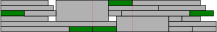

Hyperparameter Tuning
Components
- Parameter selection
- Parameter evaluation
Optimization methods
- Grid search (not recommended)
- Random search
- Bayesian methods
- Bandit methods
- Population based methods
Grid search
- Brute force, typically first thing you can think of
- Inefficient, especially for many hyperparameters
Random search
- Even simpler than grid search
- Typically also better than grid search
Bayesian methods
- Update beliefs based on observations
- In theory optimal
- In practice, choice of distributions very constrained
- Conjugate priors
- Fixed hyperhyperparameters
- Requires more work and thinking on your part
\[ P(X|D) = \frac{P(D|X)P(X)}{P(D)} \]
Bandit methods
- Focus more resources on promising runs
- Typically about pruning bad runs
- Is combined with a sampling strategy
Population based methods
- Evolutionary algorithms
- Genetic algorithms
- Particle swarm optimization
- Ant colony optimization
- …
Working with a resource queue
- Overhead and job-size
- Sequential evalution
- Batch evaluation
- Asynchronous workers
Overhead and job-size
- Launching a job with SLURM has some overhead
- Preparing node 0-5 minutes
- Importing python packages ~ 1 minute
- Loading LLM and/or dataset into memory 1-30 minutes
- But, bigger jobs are harder to schedule
- Longer queue time
- Lower overall resource utilization
- (On Alvis: More likely to hit AssocGrpBillingRunMinutes limit)
Overhead and job-size: Short and small
- For small tasks overhead can be noticeable
Overhead and job-size: Medium length

- When overhead is large, combine tasks
Overhead and job-size: Big and wide

- Long and/or wide jobs are hard to schedule
- If you can run a multi-GPU job as several single-GPU jobs, do so
Sequential evaluation

- One job at the time, no parallelisation
Batch evaluation

- Worse parameter selection than sequential
- Runs in parallel
- Possibly long time between batches
Asynchronous workers
- Worse parameter selection than sequential
- Best parallelisation
Hyperparameters
- Model architecture
- Training hyperparameters
- Inference hyperparameters
- Performance hyperparameters
- Possible metrics
Model architecture
- Base model, very important choice
- Changing base model -> restart hyperparameter search
Training hyperparameters
- Optimizer choice
- Learning rate and schedule
- Batch size
- Regularisation, momentum, …
- LoRA etc. and their parameters
- Floating point precision
- RL parameters (KL coefficient, reward model learning rate, …)
Inference hyperparameters
- (Prompt)
- Temparature
- Top-k
- Repetition penalty
- Beam search width
- …
Priors
- What are good start values?
Flat prior
- \(p(\theta) \propto 1\)
- In practice a uniform distribution
- When you’re uncertain about exact place in a range
Reciprocal prior
- \(p(\theta) \propto 1/\theta\)
- In practice a loguniform distribution
- When you’re uncertain about order of magnitude
- Usually a good choice for continuous parameters
Categorical prior
- Multiple choice where order doesn’t matter
Training hyperparameter priors
- Big impact: Training data, model architecture, optimizer, loss function and/or optimization metric
- Batch size: affects compute performance and ideal learning rate
- Learning rate: log-scale
Types of metrics
- Evaluation: loss, accuracy, …
- Speed: seq/s, …
- Compute budget: GPU-h
- Memory use: GB
- Multi-objectives and/or constraints
Cross-entropy loss
- Used to train Language Models to follow a distribution
- Minimize expected description length (minimum when \(p = q\))
- Can be estimated based on samples from \(p\) (i.e. data)
\[ H(p, q) = -\mathbb{E}_p[\mathrm{log}\,q] \]
Kullbeck-Leibler divergence
- Used in student-trainer type training (e.g. to avoid catastrophic forgetting)
- Functionally equivalent to cross-entropy loss, but used when \(p\) and \(q\) are known
- Not symmetric!
\[ D_{\text{KL}}(p||q) = \mathbb{E}_p[(\log p - \log q)] \]
Perplexity
- Measure of uncertainty, 2 for a coin toss and 6 for rolling a d6
- Perplexity per token is commonly used to evaluate how closely a LM models some data
- Is directly related to cross-entropy through exponentiation
\[ \exp(H(p, q)) \]
Accuracy
- For classification tasks
- Fraction of correct out of total answers
- Variants like top-5 that considers not just the top answer by the model exists
Optuna
- https://optuna.readthedocs.io/en/stable/
- The package of choice for this workshop
- Alternatives: Ray Tune (only single wide job), HyperOpt (seems abandoned)
The Optuna study
import optuna
optuna.create_study(
study_name=None, # a unique name for this study
storage=None, # how results are stored and instances communicate
load_if_exists=False, # True if running multiple workers
sampler=None, # method to select hyperparameters
pruner=None, # how trials are pruned
direction=None, # "minimize" or "maximize"
directions=None, # a list of directions for multi-objective
)Optuna Storage
- https://optuna.readthedocs.io/en/stable/tutorial/10_key_features/004_distributed.html#multi-process-optimization-with-journalstorage
JournalStorage: For networked filesystems that support file-locking- Storage is a file that Optuna reads from and appends to
- For use with networked filesystems that support file locking
GrpcStorageProxy: When running many concurrent trials- Uses
RDBStorageas backend (MySQL) - For running many concurrent trials (1000s)
- More complex to set-up
- Uses
Optuna Sampler
- https://optuna.readthedocs.io/en/stable/reference/samplers/index.html
- The methods which is used to propose hyperparameters for a trial
- Rough recommendation:
TPESampler, for few concurrent trialsCmaEsSampler, for many concurrent trials and no categorical hyperparametersNSGAIISampler, for many concurrent trials and categorical hyperparameters
Optuna sampling
def objective(trial: optuna.trial.Trial) -> float:
# Categorical parameter
optimizer = trial.suggest_categorical("optimizer", ["MomentumSGD", "Adam"])
# Integer parameter
num_layers = trial.suggest_int("num_layers", 1, 3, step=1, log=False)
# Floating point parameter
learning_rate = trial.suggest_float("learning_rate", 1e-5, 1e-2, step=None, log=True)Optuna Pruner
- To stop unpromising trials early to save compute
- Choices here
- Not for multi-objective search
- To invoke run:
Exercise
- Copy the optuna exercise directory from project storage into your
own directory
cp -r /mimer/NOBACKUP/groups/llm-workshop/exercises/day3/optuna/ <path-to-your-dir-here> - Copy the runtime for jupyter to your runtimes
cp portal/jupyter/Optuna.sh ~/portal/jupyter/ - Find the best hyperparameters for finetuning the LM in
optuna.ipynb- You can use https://alvis.c3se.chalmers.se Jupyter app to launch
- Choose
SamplerandPruner - Check out the jobscript to run non-interactively
- e.g.
sbatch --array=0-9%2 jobscript_optuna.sh
- e.g.
- Check out visualisations
- Anything else you’re curious about